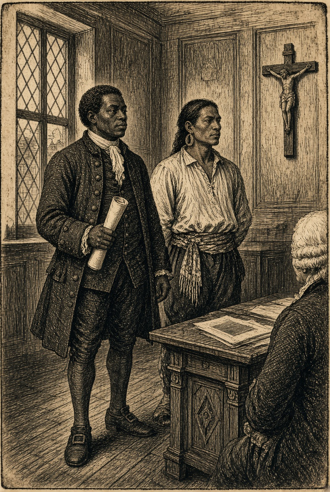
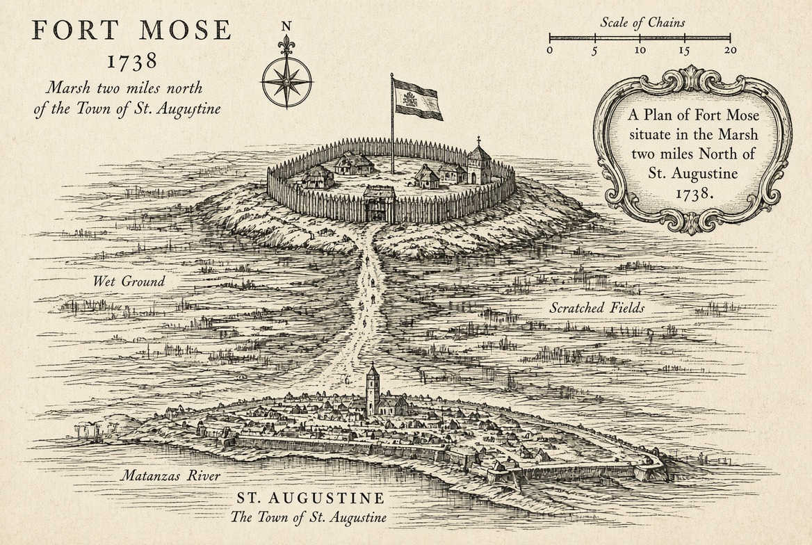
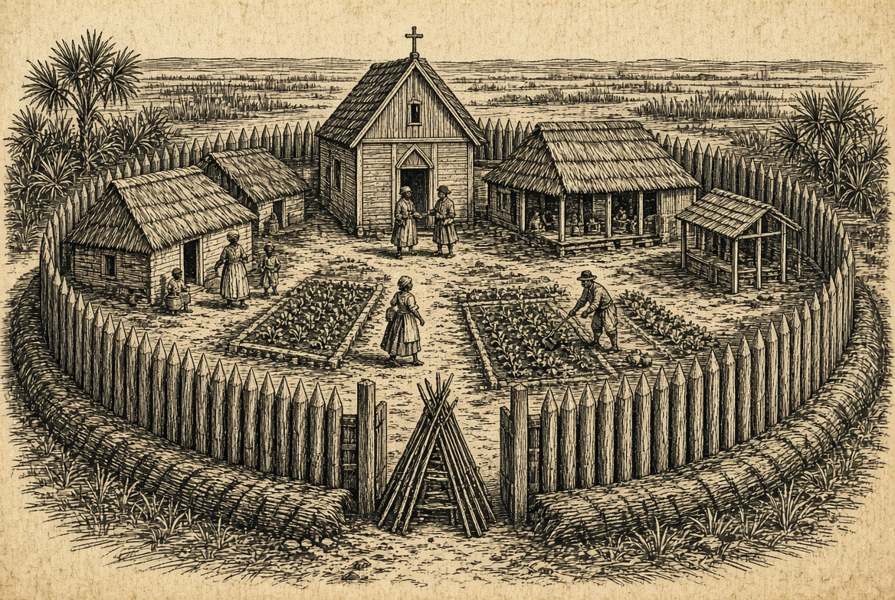
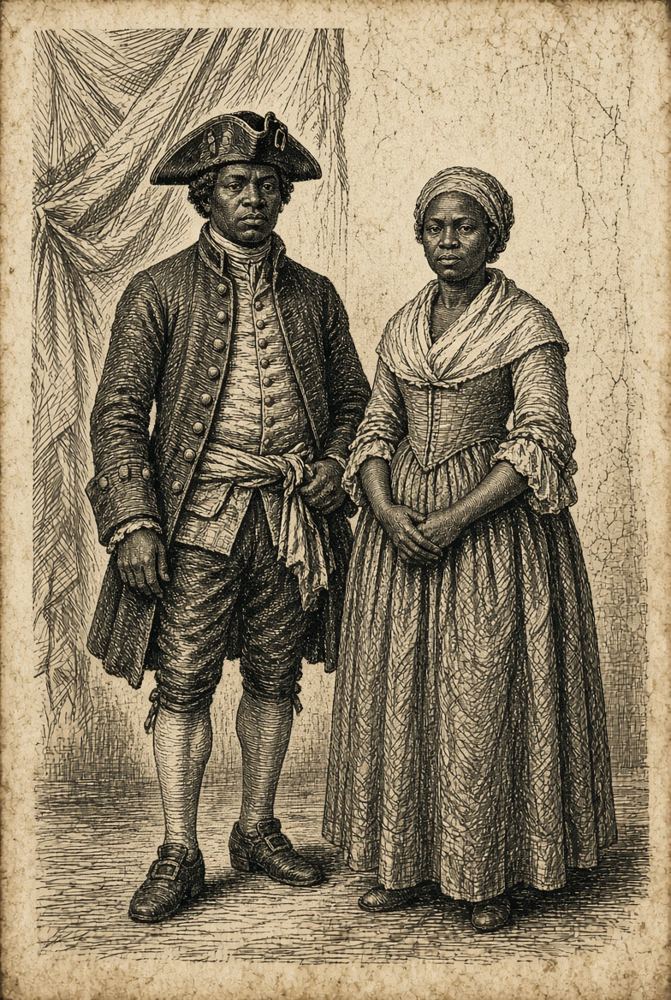
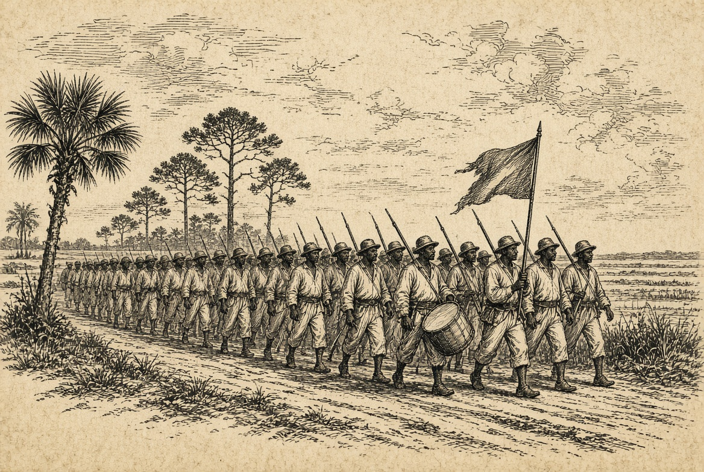
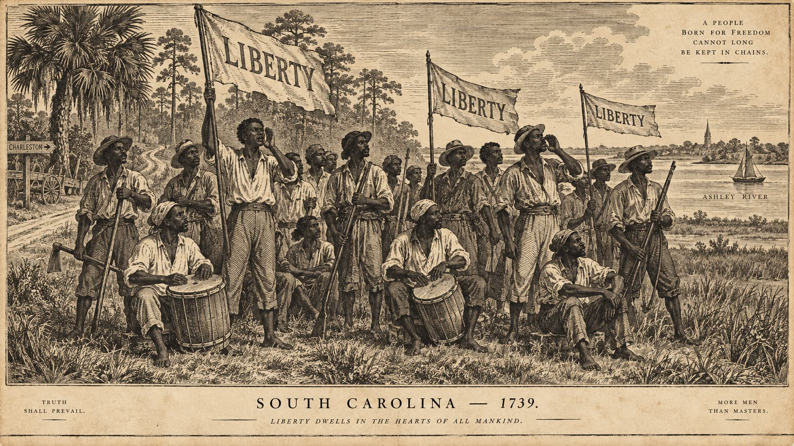

The Town Called Mose
Classroom title collage: Florida marsh, a small Spanish outpost, a sailing ship, and worn Spanish and British flags, with the lecture title centered.
Francisco Menéndez
The captain who was freed twice — and sold back
What Kind of Freedom Was That?
Essential question: How could freedom serve both enslaved people and an empire?
England Told a Story About Itself
What happened
- 1586 — Drake fights at St. Augustine; the garrison flees
- Next day he burns the empty town
The story England told
- England as liberator — Spain as tyrant
- Freeing people from Catholic cruelty
- Propaganda: Drake slaved with Hawkins too

By 1739, the Story Had Flipped
1580s
- England — liberator
- Spain — tyrant
1730s
- Spain — offers freedom
- England — runs the plantation
How the Promise Took Shape
1738 — The Governor Acts
- Menéndez and Yamasee chief Jorge petition to honor the old decrees
- Montiano rereads the orders and frees the Carolina fugitives
- He posts a public bando of freedom
- Montiano establishes Fort Mose

Gracia Real de Santa Teresa de Mose
- Two miles north of St. Augustine
- Church, council house, earthworks
- About 100 people
- Montiano names Menéndez captain of the militia
- The first legally sanctioned free African settlement in what is now the United States

Place 06-mose-founded.jpg in the same folder as this deckRefuge & Garrison
A refuge
- Free people
- Families, church, governance
A garrison
- Sits on the likely British approach to St. Augustine
- Its militia would meet the first attack

What Was Spain Getting?
Name the Choice
It meant making a choice inside it.
Pick one. Say what the person chose — and what Spain still controlled.
- Petition with Jorge until the decrees were honored
- Accept baptism and Crown service
- Live two miles out as a garrison
- Take a militia command from Montiano
Agency Inside the Empire
- People at Mose were not merely imperial instruments
- They petitioned for rights
- They built families and institutions
- They used Spanish law and military service to secure as much autonomy as the colonial order allowed

Did Carolina Hear the Promise?
- The 1738 bando made the offer public as war approached
- Sanctuary was already known in Carolina
- How far this proclamation traveled cannot be measured
The Stono Rebellion
Historical reconstruction from hostile colonial accounts
The March
By afternoon
- 60–100 participants
- More than 20 white colonists killed
- Houses struck along the Pon Pon Road
The destination
- The Edisto River
- Beyond it: a long route toward Spanish Florida

At the Edisto, They Stop
- Raise banners
- Beat drums
- Shout “Liberty”

Pause & Predict
Hold your answer. The record has more to say.
A Textbook Clue
Easy to read past. One historian didn't.
The Kingdom of Kongo
- Catholic since the late 1400s — a royal, court religion, not a shallow overlay
- Wars and political conflict sent captives into the Atlantic slave trade
- Some captives may have carried military experience across the Atlantic

Freedom Seekers — and Perhaps Soldiers
- One reading: banners, drums, and a public halt suggest organization and recruitment
- Other possibilities: rest, celebration, tactical delay — or several purposes at once
What the Record Can't Say
Surviving contemporary accounts come from white colonists and officials defending a slave society — not from a careful survey of who the rebels were. We can say some participants likely came from West Central Africa, and some likely had military training. We cannot say every leader was a Kongolese soldier.
That gap between evidence and certainty is historical method.
The Militia Arrives
- Lieutenant Governor Bull sees the column on the road, escapes, and raises the country
- By late afternoon mounted planters catch them in a field near the Edisto
- The militia dismounts and charges; the rebels fight, then break
- Many are killed on the spot; some flee south; the hunt lasts another week
What Happened to Mose
- 1740 — Oglethorpe invades Florida; the first fort is occupied, then destroyed in the counterattack
- Menéndez's militia fights in that battle; the people live twelve years inside St. Augustine
- 1752 — they rebuild a second Mose
- 1763 — Britain takes Florida; the community sails for Cuba
Independent Study
For the online hour.
Track one question: what happened when the jurisdiction recognizing freedom changed?
Fort Mose Today
- The 1738 fort's exact footprint has never been located
- A second fort (1752–1763) was found in a 1986 archaeological dig
- Now a Florida State Park and National Historic Landmark on the Florida Black Heritage Trail
Menéndez's Second Enslavement
- Captured by the British privateer Revenge in 1741
- A British admiralty court in the Bahamas refused to recognize his Spanish freedom
- Sold into slavery — then back in Spanish Florida by 1759
1730 — The Great Dismal Swamp
- Rumor: Britain had freed baptized enslaved people — and Virginia hid the news
- Several hundred resist or flee; at least 200 enter the swamp's eastern fringe
- Militia and Pasquotank allies capture some; others remain beyond the archive
Eight Decades of Policy
- 1687: a Florida governor refuses extradition
- 1693: a royal freedom decree
- 1733: a royal renewal with a service requirement